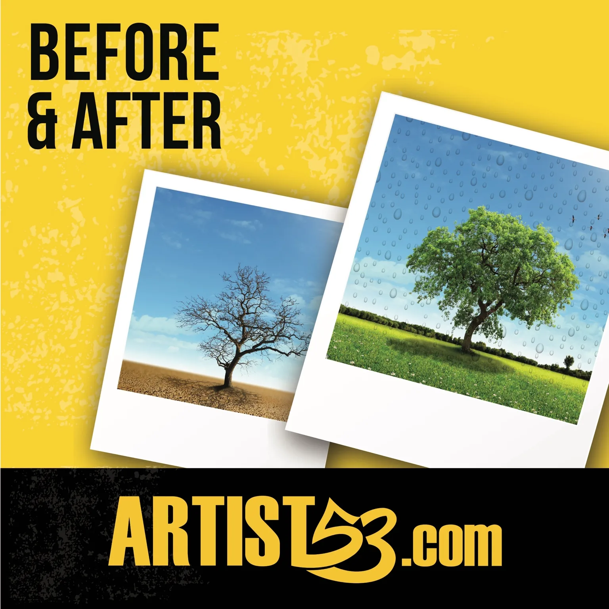
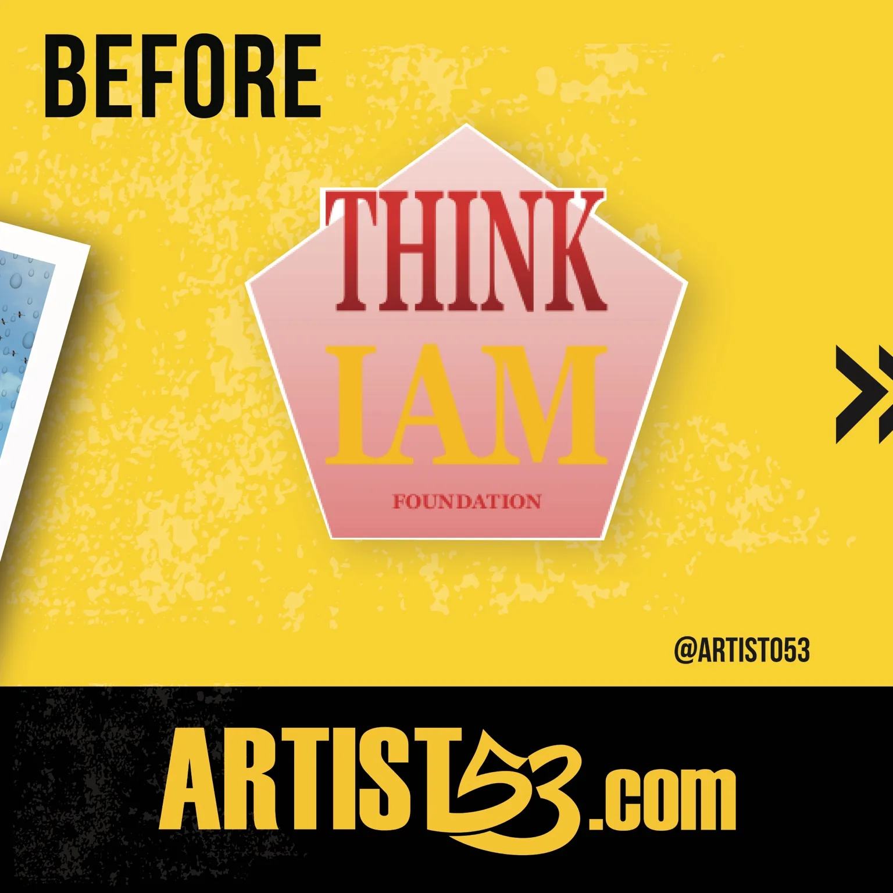
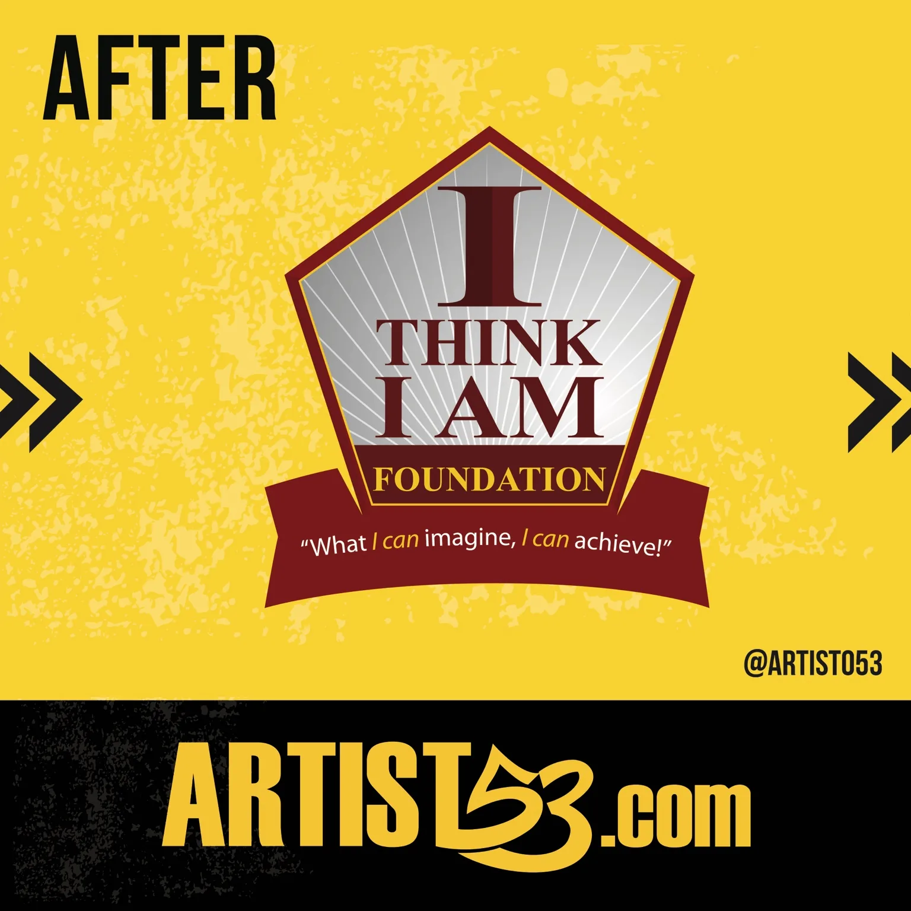
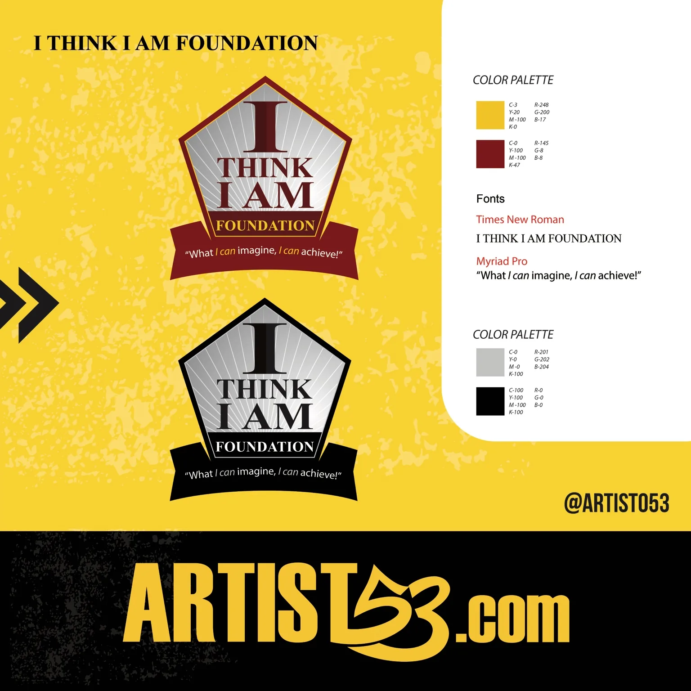

01 / Overview
The transformation at a glance: from the original visual direction to the refined identity.

Good design becomes easier to value when people understand what makes it work.
Simple, memorable, readable, versatile, relevant and unique.
Clear shapes help a brand stay recognizable at every size.
Color should support the personality of the business and stay usable everywhere.
A logo is the beginning. A complete identity creates consistency.
Client Learning / Before + After
A quick visual lesson in why logo development matters. Swipe through the original direction, the refined identity and the finished brand system to see how stronger structure, hierarchy, color and consistency changed the result.



